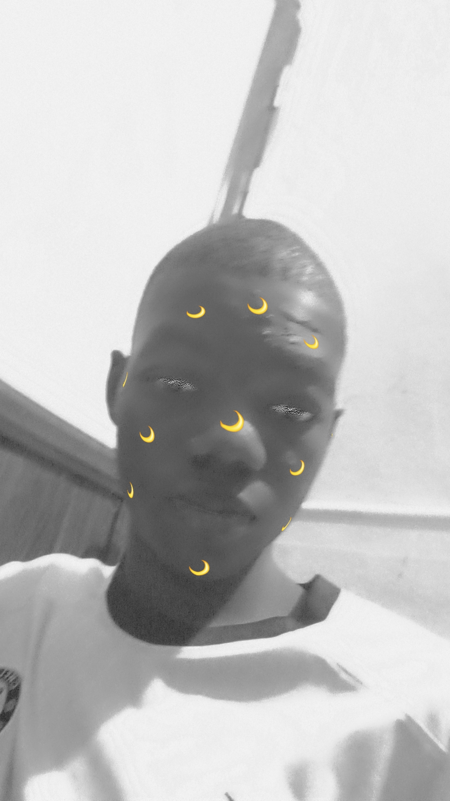

Hello! I'm Oyinbo Samuel Korede, Highly motivated and detail-oriented software developer with a passion for creating innovative solutions. Proficient in various programming languages and technologies, with a strong focus on delivering high-quality products. I'm excited to collaborate with like-minded individuals and organizations to bring ideas to life.
I love solving problems and turning complex challenges into user-friendly experiences.Currently mastering Fullstack Developement, I bring ideas to life with Html, CSS, and Javascript, and I actively work on enhancing my problem-solving, logical thinking, and collaboration skills.
🚀 Current Focus
- 1) Mastering Python Framework (Django).
- 2) Increasing Problem-Solving Skils.
- 3) Continous Leraning And Growth
- 4) Building Responsive, Scalable Applications
- 5) Bring Out The Best at any given Opportunity
💡 "Every line of code i write is intentional - Not just to build but to inspire" @Tech Plus